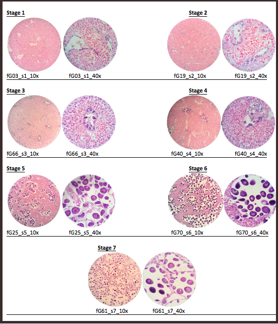
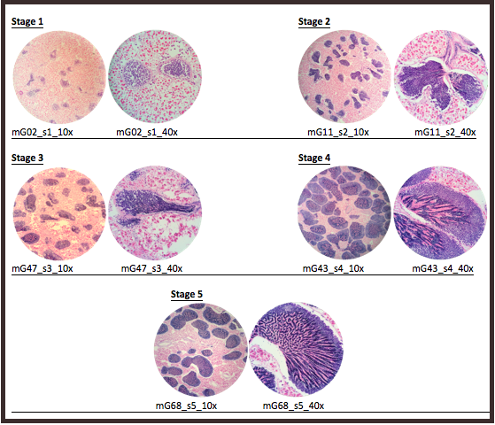
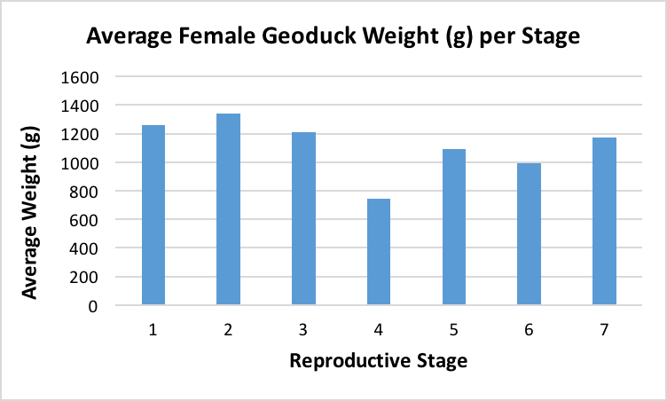
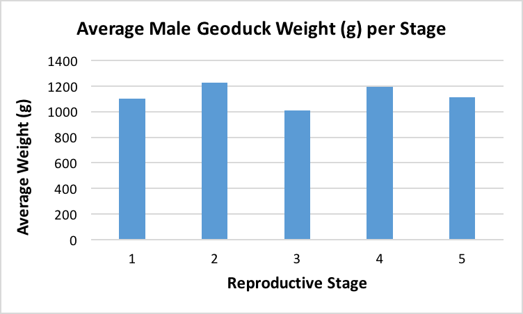
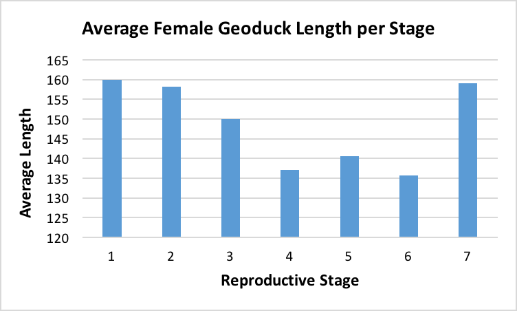
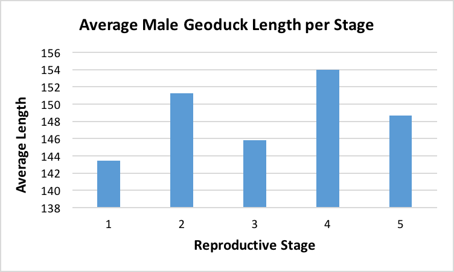
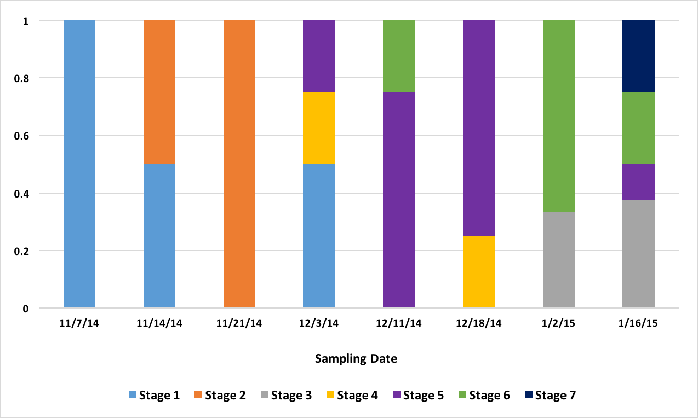
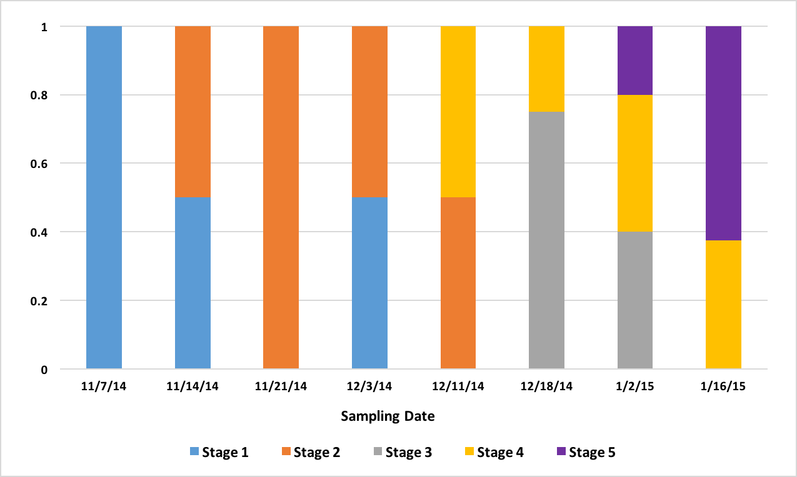

Characterization of Reproductive Maturation in Geoduck Clams (Panopea generosa)
A short non-peer-reviewed scientific report
This report is a Roberts Lab working manuscript. It has not been peer reviewed.
It is shared to make small scientific efforts, preliminary analyses, technical observations, and exploratory work openly available.
1 Abstract
Geoduck clams (Panopea generosa) are an important species in aquaculture. One challenge for the aquaculture industry is coordinating successful spawning events. An important first step in accomplishing this is to determine a complete characterization of reproductive maturation. In this study, gonad samples were taken throughout the reproductive season and classified based on fine-scale maturation status. Specifically, gonadal tissue from 70 geoducks was sampled in batches of about eight per week over the span of two months from November 2014 to early January 2015. The reproductive maturation status of the geoduck gonadal tissue samples increased with each sequential week. However, there were some that matured later than others, indicating variation in reproductive maturation rates at this fine time scale, verifying the variation in spawning demonstrated in aquaculture. This work represents the first reproductive characterization based on sequential histological sampling at a fine time scale. Several future projects will be based on this initial characterization, including the identification of protein biomarkers that correspond to maturation status.
2 Background
The most economically important commercial fishery of the Pacific Coast of North America is that of the geoduck clam (Goodwin and Pease 1989). Annually, it is worth approximately $40 million USD (Khan 2006). Geoduck clams are such a valuable commodity that a black market exists which keeps wildlife officials well occupied. To help curb black market activity, it would be beneficial for the fishery to work under the most productive conditions. As a result of this, aquaculture production efforts are increasing in order to meet the demand. Aquaculture for geoducks poses great difficulty, however, because some geoducks will spawn at the same time, some will spawn later, and some won’t spawn at all. The cause of these phenomena is unknown. Another problem that aquaculturists face is the inability of determining the sexes of the geoducks being held. There is no distinguishing coloration, size, or other morphological feature between the sexes. Currently, the only way to determine the sex of geoduck clams is to lethally dissect their gonads and examine a tissue sample, or wait for spawning, which occurs when females and males release their gametes for reproduction. Because of this, sex ratios of brood animals prior to spawning are unknown and maximum productivity in hatcheries cannot be attained.
In addition to not achieving maximum productivity, hatcheries run the risk of having low genetic diversity. Knowing sex ratios can help prevent this because they determine the amount of genetic diversity in a brood stock. If only a few of one sex are present, say only a few females, there will still be fertilization, but a great decrease in genetic diversity because many males are fertilizing and creating offspring with a much smaller number of females. In cases like this, lack of genetic diversity can result in some significant problems. Genetic diversity is important in hatcheries because it aids in the population’s resilience to different environmental conditions due to a greater variability in phenotypes (Hughes and Stachowicz 2004). Furthermore, should the hatchery population ever interbreed with wild stocks, the genetic diversity of the wild stock will not be disrupted by any lack of diversity in the hatchery population (Waples 1991).
Despite how much is unknown about these animals’ reproduction process, there is a general reproductive cycle that geoduck clams are known to undergo. Gametogenesis, the development of the oocytes in females and spermatocytes in males, begins in September, with spawning events occurring in March through July (Goodwin and Pease 1989). It is also known that male geoduck clams mature sooner than females; however, both sexes are not reproductively mature for the first year or so of life (Andersen 1971). With this information, and the desire to investigate the unknown, this project was developed.
This project involves using histology slides made from the gonad tissue of 70 geoduck clams harvested in November and dissected through January, from which sex and reproductive stages of development were determined for this fine time scale. The geoducks were held in spring conditions in order to replicate what aquaculturists expose their stock to. They do this in order to increase the rate of maturation because spring is typically when the bulk of spawning occurs, so if the geoducks are exposed to spring-like conditions, they become reproductively mature sooner. The purpose is to investigate the maturation progression of the geoducks from November to January and also to see if there is any variation in maturation rate that could confirm the spawning time variability that the aquaculturists are experiencing. From there, future research will involve the tissues of a few representative geoducks of early, middle, and late reproductive stages of both sexes, to be used for protein analysis with the intent of identifying biomarkers. From there, a tool can be created to test for the biomarkers to determine both sex and reproductive maturation stage in order to significantly improve aquaculture production.
3 Methods
3.1 Tissue sampling
Geoduck clams (Panopea generosa) (n = 70) were obtained from the area fronting the Puget Sound Marina, Nisqually Reach, WA (47 08.89°/122 47.439°). They were collected at depths of 30 to 45 feet from a sandy substrate on November 6, 2014, which in the general timeline of the geoduck reproductive cycle puts these geoducks past the initial gametogenesis phase (September). They were kept at Taylor Shellfish Hatchery in Quilcene, WA in common spring conditions.
Starting the first week of specimen dissection — week of November 7, 2014 — eight geoducks were transported from Taylor Shellfish Hatchery to the University of Washington. Each geoduck was weighed and measured, then dissected. Dissection of six to eight geoducks continued about every week until January 16, 2015. The gonad tissue surrounding the visceral mass of each individual geoduck was sampled by taking a section of tissue no larger than 4 × 15 × 15 mm. The sample was then placed in a histology cassette and fixed using Tissue FIX and Tissue STABILIZER (Qiagen, PAXgene). The tissues were fixed in individual containers for ~24 hours, and then switched to the stabilizer solution to preserve the tissues. The fixed and stabilized tissues were sent to the Diagnostic Pathology Medical Group in Sacramento, CA to be made into histology slides and stained with hematoxylin and eosin.
In addition to histology cassette samples, two other samples were taken from each geoduck. Small samples of each gonad tissue were frozen at −80 °C in microtubes for future proteomic analyses, and hemolymph samples of each geoduck were taken after shell removal by inserting a syringe into the pericardial space, and then frozen at −80 °C to use for protein analysis.
3.2 Reproductive staging
Once the histology slides were returned, the tissue samples were sexed and categorized into stages of sexual development. The sex was determined by examination of the histology slides for the presence of either oocytes or spermatids. After the samples were sexed, each sex was further examined to create parameters for reproductive ripeness. For females, the parameters were average secondary (2°) oocyte size (µ) and estimated average follicle size (µ). For males, the parameters were percentage of tissue composed of acini and percentage of acini composed of spermatids. Using these parameters, stages of development were established (Table 1, Table 2).
| Stage | Defining characteristics |
|---|---|
| 1 | No 2° oocytes, or 2° oocytes ~5–15 µ |
| 2 | Follicles ~200–300 µ; 2° oocytes ~20–35 µ |
| 3 | Follicles ~300–500 µ; 2° oocytes ~20–35 µ |
| 4 | Very few follicles; 2° oocytes ~45–60 µ |
| 5 | More follicles than in Stage 4; 2° oocytes ~50–75 µ |
| 6 | More connective tissue than in Stage 7; 2° oocytes ~65–85 µ |
| 7 | Almost no connective tissue, mostly follicles; 2° oocytes ~65–85 µ |
| Stage | Defining characteristics |
|---|---|
| 1 | Mostly connective tissue; small acini; ~<5% spermatids per acinus |
| 2 | Larger acini than in Stage 1; ~5–10% spermatids per acinus |
| 3 | More connective tissue than in Stage 4; smaller acini than in Stages 4 and 5; ~50% spermatids per acinus |
| 4 | More connective tissue than in Stage 5; large acini; ~50–75% spermatids per acinus |
| 5 | Very little connective tissue; large acini; ~75–90% spermatids per acinus |
4 Results
A total of 70 histology slides were examined. The sexes of the geoduck sample tissues were determined through the presence of either oocytes or spermatids. Then, within sexes, the individual slides were placed into a reproductive stage of development (Table 3, Table 4), according to the parameters as shown in Table 1 and Table 2. Representative images for each reproductive stage are presented in Figure 1 and Figure 2.
After the histology slides were categorized, the geoduck weight and length data was revisited to investigate if there was any correlation between geoduck size and reproductive stage. Geoduck weight and length were compared separately across the reproductive stages in each sex, and no apparent correlations were found between either characteristic and the geoduck ripeness in each stage (Figure 3, Figure 4, Figure 5, Figure 6). Then, the proportion of geoduck clams at each stage of reproductive development per each sampling week was analyzed for each sex (Figure 7, Figure 8). A general trend of increasing reproductive ripeness over time was demonstrated for both sexes from November to January. There were some variations, however, with Stage 4 geoducks in both males and females showing up before Stage 3. Also, Stage 1 geoducks for both sexes appeared in December.
| Stage 1 | Stage 2 | Stage 3 | Stage 4 | Stage 5 | Stage 6 | Stage 7 |
|---|---|---|---|---|---|---|
| Geo-01 | Geo-15 | Geo-48 ** | Geo-31 | Geo-25 | Geo-37 | Geo-57 |
| Geo-03 | Geo-18 | Geo-55 | Geo-40 | Geo-34 | Geo-50 | Geo-61 |
| Geo-04 | Geo-19 | Geo-64 | Geo-35 | Geo-51 | ||
| Geo-05 | Geo-21 | Geo-38 | Geo-69 | |||
| Geo-06 | Geo-22 | Geo-39 ** | Geo-70 | |||
| Geo-08 | Geo-23 | Geo-44 | ||||
| Geo-14 | Geo-24 | Geo-45 | ||||
| Geo-29 | Geo-58 | |||||
| Geo-30 |
| Stage 1 | Stage 2 | Stage 3 | Stage 4 | Stage 5 |
|---|---|---|---|---|
| Geo-02 | Geo-10 | Geo-41 | Geo-33 | Geo-52 |
| Geo-07 | Geo-11 | Geo-42 | Geo-43 | Geo-62 |
| Geo-09 | Geo-13 | Geo-46 | Geo-49 | Geo-63 |
| Geo-12 | Geo-17 | Geo-47 | Geo-53 ** | Geo-65 |
| Geo-16 | Geo-20 | Geo-54 | Geo-56 | Geo-67 |
| Geo-26 | Geo-27 | Geo-59 | Geo-68 | |
| Geo-28 | Geo-32 | Geo-60 | ||
| Geo-36 |








5 Discussion
These results were more or less what was expected. As time progresses, the reproductive ripeness increases for both sexes. However, Figure 7 and Figure 8 demonstrate the variability in reproductive maturation rates. In both figures, the Stage 1 geoduck clams make a reappearance in December. Also, in both sexes, Stage 3 geoducks appear after all or the majority of Stage 4 geoducks appear. These results verify the conditions that aquaculturists are experiencing, as these variations in reproductive maturation rates could result in the variations in timing of spawning and could also be the cause of some geoducks not spawning at all if they mature very slowly.
During dissection, it was clear how anatomically indistinguishable one geoduck was from the next, solidifying through first-hand experience that these animals would be impossible to sex through superficial examination. This was further supported through Figure 3 through Figure 6, which indicate no apparent correlation between weight or length and reproductive stage at this time scale. However, these averages may be skewed due to variable numbers of geoduck individuals per reproductive stage, but that could not be controlled as there currently is no method of sexing geoducks without dissection.
These results were determined after close examination of and comparisons between the histology slides made from the gonad tissue of each geoduck specimen, and exhibit enough accuracy for the needs of the continuing analyses. As the nature of this project involved comparisons between histology slide measurements among the two sexes, it should be noted that the cut-off values of parameters for the stages were created subjectively. Further, it should be noted that these stages are for fine time scales and should not be compared with those in literature. In literature, reproductive maturation staging has been done on larger scales, and a stage 3 in literature is a mature geoduck, whereas at this fine scale spanning from November to January, a stage 3 is a fairly reproductively immature geoduck.
The proteomics and protein analyses methods are already underway. The preserved tissue samples from seven females (stages 1, 5, and 6) and from six males (stages 1 and 3) underwent protein analysis. The proteins associated with sex and reproductive stage were determined (unpublished, Roberts Lab data 2016). Further work needs to be done to isolate the responsible proteins for each stage. Once that is achieved, future projects will involve developing a non-lethal test for the presence of the associated proteins in order to sex the geoducks and estimate their progression towards sexual maturity. Some possible methods could be through the use of a dipstick to test for the presence of certain proteins, or to develop a method of determining protein presence through analysis of hemolymph non-lethally removed.
If this end goal is reached, the ability to non-lethally determine sex and ripeness will prove very useful to not only aquaculture in the Puget Sound, but also to the seafood market and regulations on geoduck harvesting in the field. Aquaculturists will be able to have known sex ratios composing their brood stocks, greatly decreasing the possibility of developing low genetic diversity. Also, knowing the progression of protein expression through gametogenesis could help reveal when the geoduck clams are ready to spawn, thus increasing the success rate of geoduck production. This increase in productivity will help meet demand for geoduck more readily, making the apparent need for black market activity nearly obsolete as likely more customers will choose aquaculture and legal geoduck over illegal harvest. Furthermore, it would greatly contribute to our general knowledge about these animals. Even though these animals have been hugely important for commercial use for decades, much of their biology remains a mystery. With the increasing popularity of these clams in the food sector worldwide, the importance of understanding their biology is becoming more pronounced as higher demands need to be met. Not only that, but from a purely scientific standpoint, biologists are curious about these animals, and any additional insight is valuable. Further research will likely shed light on the unknown reproductive processes that geoducks undergo, and this increase in understanding will allow for our increase in developing methods to maximize harvest.
6 Data and code availability
The reproductive maturation dataset for this study is archived on figshare: Reproductive Maturation in Geoduck clams (Panopea generosa).
7 Suggested citation
Crandall, G., and S. B. Roberts. 2016. Characterization of Reproductive Maturation in Geoduck Clams (Panopea generosa). Current Findings. Available at: https://robertslab.github.io/current-findings/reports/geoduck-reproductive-maturation/
8 Version history
| Version | Date | Notes |
|---|---|---|
| 0.1 | 2026-06-17 | Migrated from Geoduck-CharReproMatu-Crandall.pdf |